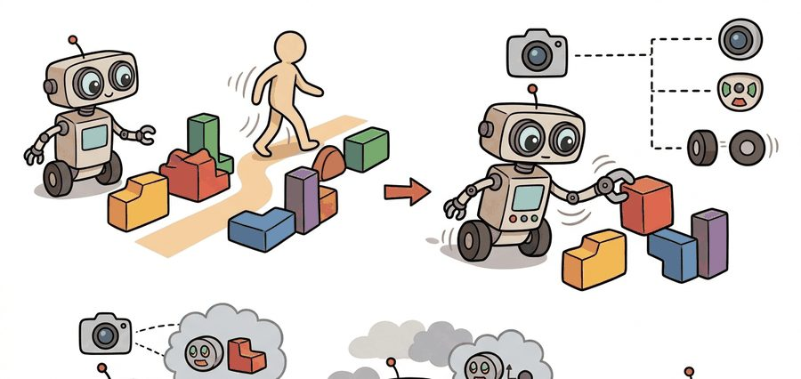
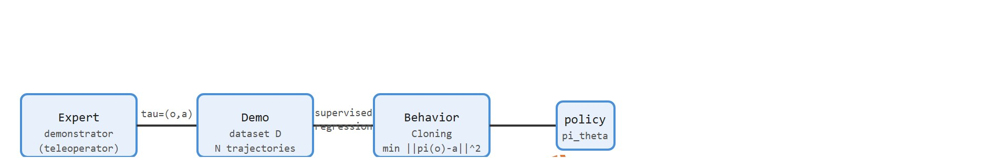

"Trial and error is one way to discover how to open a jar. Watching someone do it first is faster, cheaper, and less sticky."
A Robot Watching Very Carefully

This section assumes familiarity with the Markov decision process formulation and the notion of a policy covered in section 14.1, and with reward sparsity discussed in section 18.2. The behavior cloning baseline introduced here is extended in section 21.2, which formalizes covariate shift, and in section 21.3, which presents DAgger as the interactive fix. The demonstration-data contracts developed here recur throughout Part V alongside the teleoperation pipelines in section 23.2 and scale up to vision-language-action models in Chapter 34.
A human teleoperator threads a bolt in twenty seconds. Reinforcement learning left alone would spend days discovering that a 0.3 mm alignment matters. Demonstration shortcuts that entire ordeal: one trajectory carries implicit knowledge that no reward function captures cheaply. Right now, as robot fleets move from structured factories into cluttered homes, the gap between what we can reward-shape and what humans do effortlessly is the central bottleneck in embodied AI. This section builds the mental model for why demonstrations are the most data-efficient entry point into contact-rich, bimanual, and style-sensitive skills, and sets up the behavior cloning baseline you will implement and stress-test in the sections that follow.
Picture a robot arm that has tried for three days to slot a USB connector into a port, firing through tens of thousands of near-misses while a sparse reward stubbornly stays at zero; now picture a human teleoperator solving the same task fifty times in under an hour, each attempt quietly carrying the sub-millimeter alignment secret no reward function ever spells out. That contrast is the whole argument for learning from demonstration, and this section turns it into a usable mental model: first we define the object of study, then we connect it to the agent loop, then we test it with a compact implementation. Figure 21.1A frames the core trade-off, placing learning from demonstration against reinforcement learning on data and sample-efficiency axes to show why demonstrations collapse the exploration problem for contact-rich tasks.
The key question in Why learning from demonstration matters for robots is practical: what must the agent know, what can it observe, what action is available, and what evidence shows that the action worked under the stated conditions?
A representation earns its place when it changes the measurable action interface. In why learning from demonstration matters for robots, the reader should keep asking which decision becomes easier, safer, or more reliable.
For Why learning from demonstration matters for robots, the practical design rule is to make the interface inspectable before optimization begins: inputs, outputs, units, latency, bounds, and failure labels should all be visible in the saved artifact.
The mechanism is the contract between recorded demonstration and executable action. On an ALOHA bimanual rig (a low-cost, two-arm teleoperation platform for fine-manipulation research), what enters is a stack of wrist and overhead camera frames at 30 Hz plus 14-dimensional joint state; what leaves is a 14-dimensional joint-delta command in radians that the Interbotix controllers accept. The transformation is valid only when camera frames and joint-state publishers share one clock; the ROS 2 rosbag2 timestamp log is the artifact that reveals a bad handoff, because a one-cycle drift (20 ms at 50 Hz) silently shifts every action label without raising an error.
That inspectable interface contract stays abstract until a concrete task forces every field to take a value, so consider a specific case: a robot arm must insert a USB connector into a port. Reward-shaping this with RL requires defining a numerical reward that fires only on successful insertion, but the connector makes contact at sub-millimeter tolerances and the reward stays zero through thousands of near-misses. A human operator demonstrates 50 episodes via teleoperation. Behavior cloning then treats the problem as supervised regression: for each timestep, it fits a neural network policy $\pi_\theta(a_t \mid o_t)$ to minimize prediction error against the recorded actions. With 50 demonstrations at 30 Hz, that is roughly 90,000 labeled state-action pairs. Training typically converges in minutes on a single GPU for a policy this small, and in this illustrative run the policy achieves 70% insertion success in evaluation. The gap to 100% is not random; it is covariate shift: the policy visits wrist angles the demonstrator never produced, has no corrective experience there, and drifts into failure states.
from pathlib import Path
dataset_root = Path("robot_demos")
for episode in sorted(dataset_root.glob("episode_*")):
print("inspect", episode.name)
print("next step: convert demonstrations to the LeRobotDataset format")robot_demos directory, listing each episode_* folder found and printing the target format (LeRobotDataset) that the raw demonstration files must be converted into before training. It surfaces the data interface before LeRobotDataset or robomimic takes over storage, batching, and visualization.Expected output: the printed trace for Why learning from demonstration matters for robots should expose the method configuration, the measured evidence field, and the failure label. If one of those fields is missing or unchanged under the perturbation, the example is not yet an evaluation artifact.
Use LeRobot or robomimic for dataset layout and loaders, but keep a small readable baseline that exposes observation keys, action units, train/test split, and rollout metrics before scaling to more advanced imitation architectures such as ACT (Action Chunking Transformer, which predicts a short sequence of future actions per inference step), Diffusion Policy (which models the action distribution as a denoising process), or VQ-BeT (which discretizes actions into a learned codebook), or to teleoperation hardware such as ALOHA, GELLO, or UMI.
Before any library can store or batch that data, it helps to be precise about what a demonstration actually is. A robot demonstration is not merely a video of success. A demonstrator policy $\pi_E(a \mid o)$ produces a time-indexed trajectory $\tau = (o_0, a_0, o_1, a_1, \ldots, o_T)$ under a specific robot body, sensor layout, controller, reset distribution (the rule that decides where the robot and objects start at the beginning of each episode, discussed further in the algorithm box and checklist below), and task definition. This structure matters because a physical robot cannot replay a video. It needs the exact action $a_t$ in its own control units (joint deltas, end-effector velocities, gripper torques) synchronized with the observation $o_t$ that prompted it. Wrong action units, or timestamps misaligned by even one control cycle, force the robot to execute a meaningless sequence, and the learned policy inherits that noise silently. Engineers collect trajectories via teleoperation, kinesthetic teaching (a human physically guides the robot's own arm through the motion so its joint encoders record the trajectory directly), or scripted simulation rollouts, recording synchronized (observation, action) pairs at 30 to 50 Hz. The pairing step introduces most errors: camera frames and joint-state publishers run on separate clocks, and a naive wall-clock merge shifts action labels by one or two steps without any Python error or NaN loss.
So far: a demonstration is a synchronized trajectory of (observation, action) pairs tied to one specific robot body and controller, collected via teleoperation, kinesthetic teaching, or scripted rollouts, and the biggest practical risk is silent timestamp misalignment between cameras and joint-state publishers during that collection step.
Learning from demonstration matters because many embodied skills fall into the show-don't-reward gap, where they are far easier to show than to reward-shape. Insertion, bimanual folding, tool use, and recovery from small contact mistakes often carry sparse or misleading reward signals. A USB insertion task trained purely with RL typically needs 40,000 to 80,000 environment episodes before the reward fires reliably. This estimate comes from sparse-reward manipulation benchmarks reporting similar sample counts for sub-centimeter insertion tasks (for example, the peg-insertion results in robomimic); the exact number depends on the tolerance and the exploration strategy, so treat it as an order-of-magnitude figure rather than a fixed constant. Fifty teleoperated demonstrations cut that to a single supervised pass over roughly 90,000 already-labeled timesteps, because each demonstration carries the alignment secret the reward never states. The most direct use of these trajectories is behavior cloning (BC): treat the demonstration data as a supervised dataset and train a policy $\pi_\theta$ to minimize the prediction error $\mathbb{E}_{(o,a)\sim d_E}[\|\pi_\theta(o) - a\|^2]$ for continuous actions, or cross-entropy for discrete ones. BC works well when the task is short-horizon or the demonstration distribution is dense enough to cover likely recovery states. A demonstration is not a shortcut around learning; it is the most information-dense signal a learner can receive before it has ever touched the task. Figure 21.1B traces both routes side by side: the fast demonstration path from expert to policy in a single supervised pass, and the slow RL path that must explore for tens of thousands of episodes before the sparse reward fires.

Think of the show-don't-reward gap like teaching someone to parallel park. You could write a rule sheet: "turn the wheel 1.5 rotations when the rear bumper clears the car behind you by 30 cm, then straighten when the curb is 20 cm away." But no beginner can execute that rule sheet, because the numbers only make sense once you already know what the situation feels like from inside the car. A single passenger-seat ride with an expert driver who narrates their wrist movements transfers the skill in minutes, bypassing the entire rulebook. The reward signal (parked or not parked) fires only at the end, long after every small steering adjustment that actually determined the outcome.
A common misconception is that a robot demonstration is a directly executable recipe: record what the human did, play it back on the robot, and the skill transfers. This is wrong in embodied AI because the demonstrator and the robot have different bodies, sensors, and control interfaces. A human wrist motion captured on video has no meaning to a robot controller that expects joint-delta commands in radians; the demonstration must be re-expressed as synchronized (observation, action) pairs in the robot's own coordinate frame before any learning can occur. The correct mental model is that a demonstration is a sample from an expert distribution over the demonstrator's state-action space, and the learner's job is to fit a policy that generalizes from that distribution to the states the robot will actually encounter during its own deployment.
The mental model above (fit a policy to expert pairs, then watch it drift once it leaves the expert's states) is now precise enough to write down as a repeatable procedure; the box below turns that same idea into the exact steps a training script executes.
Input: Demonstration dataset $\mathcal{D} = \{\tau^{(i)}\}_{i=1}^{N}$ where each trajectory $\tau^{(i)} = (o_0, a_0, o_1, a_1, \ldots, o_T)$ is produced by expert policy $\pi_E$; policy network $\pi_\theta$ with parameters $\theta$; learning rate $\alpha$; number of epochs $K$.
Output: Trained policy $\pi_\theta$ that approximates $\pi_E$ on the expert distribution $d_E(o)$.
Trace behavior cloning with a tiny example. Suppose two demonstrations of a 1D reaching task, where the observation is position $o$ and the action is a velocity command $a$. Demo 1: $(o{=}0.0, a{=}0.5), (o{=}0.5, a{=}0.3), (o{=}0.8, a{=}0.0)$. Demo 2: $(o{=}0.1, a{=}0.4), (o{=}0.5, a{=}0.2), (o{=}0.7, a{=}0.0)$. Flatten into 6 state-action pairs. Fit the simplest policy $\pi_\theta(o) = w\cdot o + b$ by least squares. Step 1, stack the pairs: inputs $o = [0.0, 0.5, 0.8, 0.1, 0.5, 0.7]$, targets $a = [0.5, 0.3, 0.0, 0.4, 0.2, 0.0]$. Step 2, solve for the line of best fit, which gives $w \approx -0.60$ and $b \approx 0.51$. Step 3, predict at the two states the demonstrator visited near the start: $\pi_\theta(0.0) = 0.51$ (target was 0.5, error 0.01) and $\pi_\theta(0.5) = 0.21$ (targets were 0.3 and 0.2, mean 0.25, error 0.04). Step 4, the covariate-shift test: the deployed policy overshoots slightly and reaches $o = 0.9$, a state no demonstration covered. The policy extrapolates to $\pi_\theta(0.9) = 0.51 - 0.54 = -0.03$, a backward command the expert never produced. That tiny negative number is the show-don't-reward gap appearing in three lines of arithmetic.
The self-contained contract is therefore: observations $o_t$ are what the learner sees, actions $a_t$ are what the controller accepts, and demonstrations define an empirical distribution $d_E(o)$ over states or observations visited by the expert. A learned policy is useful only if it acts well under its own induced distribution $d_\pi(o)$, not only under $d_E(o)$. This distinction connects the chapter to Chapter 14, where policies are evaluated by the trajectories they generate.
The first imitation-learning question is not which neural network to use. It is whether the demonstration distribution covers the states the deployed policy will create after its own small mistakes.
Behavior cloning error compounds over time. A policy that is 99% accurate per step on a 100-step task accumulates roughly $0.99^{100} \approx 37\%$ survival probability, and each small deviation moves the robot into states the expert never visited. Three conditions reliably trigger this failure: long-horizon tasks where small errors accumulate, contact-rich phases where the robot must react to forces not present in the demonstration, and lighting or viewpoint changes that shift the observation distribution at test time. DAgger (Ross et al., 2011) addresses this by interactively querying the expert on states the learned policy actually visits, collapsing the gap between $d_E$ and $d_\pi$.
Code Fragment 21.1.2 makes the contract concrete by checking which fields a demonstration episode should expose before it is used by LeRobot, robomimic, or a custom PyTorch data loader.
# Inspect the minimum metadata needed before training from demonstrations.
# The check separates robot provenance from policy architecture.
required = {"robot", "camera_hz", "action_space", "operator", "split", "license"}
episode = {
"robot": "dual_arm_tabletop",
"camera_hz": 30,
"action_space": "joint_delta_14d",
"operator": "teleop_human_A",
"split": "heldout_task",
}
missing = sorted(required - episode.keys())
print("missing fields:", missing)
print("ready for training:", len(missing) == 0)license field is not cosmetic, because robot datasets are often shared, remixed, or filtered through public hubs.Always record the action_space field as a string that includes both the coordinate frame and the units, for example "joint_delta_14d_rad" rather than just "joint_delta_14d". Behavior cloning loss will appear to converge normally even when a policy trained on joint-delta actions is deployed against a controller that expects absolute joint positions; the mismatch produces erratic motion without a Python error or NaN loss. A concrete check: confirm that episode["action_space"].endswith("_rad") or "_deg" and that the rollout wrapper uses the matching controller mode before any training run begins.
After the metadata contract is explicit, LeRobotDataset (v3.0 as of 2024) provides a maintained format for multimodal time-series robot data, sensorimotor signals, multi-camera video, and searchable metadata. That collapses a custom storage stack into a dataset object while preserving the provenance fields that make comparisons reproducible.
The common mistake in Why learning from demonstration matters for robots is to celebrate the component score before checking the closed-loop handoff. The failure usually appears at the boundary: stale state, wrong frame, delayed action, saturated actuator, or metric that ignores the real task cost.
A robot learning engineer applying why learning from demonstration matters for robots starts by recording the robot body, camera setup, action units, operator source, and split policy for every episode. That record makes it possible to compare LeRobot with a baseline without changing the task definition midstream.
For why learning from demonstration matters for robots, the useful test is simple: could a teammate point to the log line, plot, or trace that proves the idea changed the agent's next action?
Scaling demonstration data across embodiments (2024-2026). The Open X-Embodiment dataset (Padalkar et al., 2023, extended through 2024) aggregated over 1 million trajectories from 22 robot types, enabling cross-embodiment policies (a single trained policy that transfers across different robot morphologies, rather than one policy per robot) that generalize behavior from one robot morphology to another. The active question is how many demonstrations per target embodiment are needed for fine-tuning, and which action representations transfer most cleanly across arm configurations.
Diffusion-based imitation for multimodal behavior (2024-2025). Diffusion Policy (Chi et al., 2023) established that modeling the action distribution as a diffusion process captures multimodal expert behavior that mean-regression BC collapses. Follow-on work in 2024 from Stanford's IRIS and Berkeley's RoboAgent groups extends this to language-conditioned and cross-task settings, with Pi0 (Black et al., 2024) from Physical Intelligence scaling diffusion-based imitation to bimanual dexterous tasks on real hardware.
Human video as a free demonstration source (2024-2026). Rather than requiring synchronized robot teleoperation, recent work mines internet video of humans performing household tasks. UniSim (Yang et al., 2024) and Vid2Robot (Etukuru et al., 2024) learn action-conditioned world models or cross-embodiment policies directly from human hand videos, treating the morphology gap as a learned retargeting problem.
Open problem for PhD students: Demonstration datasets collected via teleoperation encode the operator's skill level, reaction time, and style into the action distribution, but current BC methods treat all demonstrations as equally reliable. A tractable open problem is automatic demonstration quality scoring that weights episodes by their informativeness for covariate-shift-prone regions of the state space, without requiring additional human annotation or privileged simulator access.
Can you name the observation, state estimate, action, success metric, and most likely failure mode for why learning from demonstration matters for robots? If not, the system boundary is still too vague.
Learning from demonstration earns its keep only under a closed-loop contract that names the observation stream, the state estimate, the action representation, the timing budget, and the evaluation artifact. Without it, a model looks capable in a notebook yet fails the first time a sensor drops a frame or a controller saturates.
For Why learning from demonstration matters for robots, separate the conceptual claim, the systems claim, and the evidence claim. A plausible mechanism, a clean interface, and a closed-loop result are different claims; the section should keep their evidence separate.
| Tool or Library | Role in Imitation Learning | Builder Advice |
|---|---|---|
| LeRobot (Hugging Face) | Standardized dataset format (LeRobotDataset v3.0 as of 2024) for multimodal robot episodes: wrist/overhead cameras at 30 Hz, proprioception at 50 Hz, language annotations, and action tokens; ships pretrained ACT and Diffusion Policy checkpoints for Franka and ALOHA. | Use LeRobot as the primary storage format from day one. Its HDF5 layout stores synchronized video, joint states, and operator metadata in a single file, so the train/eval split and license field are never lost between experiments. |
| robomimic | Offline imitation learning benchmark with Franka Panda manipulation datasets (Lift, Can, Square, Transport) at multiple human proficiency levels (machine-generated, okay, good, better, best). Provides behavior cloning, BCQ, and IQL baselines with fixed evaluation protocols; BCQ and IQL are offline reinforcement learning algorithms that learn a policy purely from a fixed dataset of logged transitions, without further environment interaction. | Use robomimic when you need a controlled ablation: its proficiency splits let you measure how demonstration quality, not just quantity, affects BC success rate on contact-rich tasks such as square-peg insertion at 1 mm tolerance. |
| MuJoCo | Physics simulation for generating demonstration data at scale and for closed-loop rollout evaluation. Sub-millisecond contact resolution makes it the standard sim-to-real testbed for tasks where Franka or UR5 behavior depends on friction and grasp force. | Collect scripted or motion-planned demonstrations in MuJoCo first; record all joint torques, not just positions. Real hardware teleoperation later fills the distribution gap, but a sim corpus of 500 episodes catches most BC failure modes before the robot is touched. |
| ROS 2 | Middleware that synchronizes camera streams, joint-state publishers, and gripper drivers during live teleoperation recording on hardware such as Franka, UR5, or a bimanual ALOHA setup. Action timestamps and tf2 transforms are stored in rosbag2 for replay. | Always record a rosbag alongside the LeRobot episode. The raw bag captures hardware timestamps to the microsecond; if camera and proprioception desynchronize by more than one control cycle (20 ms at 50 Hz), the BC loss will silently train on misaligned pairs. |
| Gymnasium | Environment interface for evaluating a trained BC policy in closed-loop rollout. The step/reset contract decouples the policy from the simulator, letting the same policy checkpoint run in MuJoCo, Isaac Sim, or a hardware wrapper without code changes. | Wrap real-hardware rollout in a Gymnasium-compatible class from the start so that sim evaluation and hardware evaluation share the same success-metric code. Divergence between sim and hardware success rates is one of the clearest early signals of sim-to-real gap. |
For Why learning from demonstration matters for robots, start with a small baseline that logs inputs, outputs, units, timestamps, and termination conditions before moving to Gymnasium or PettingZoo. The library run should keep the same artifact schema, so the comparison remains a same-task evaluation.
When Why learning from demonstration matters for robots fails, avoid labeling the whole method as weak. First assign the failure to perception, state estimation, planning, control, timing, data coverage, or evaluation. Then rerun one controlled perturbation that isolates the suspected cause. This pattern turns a disappointing rollout into a reusable diagnostic asset.
Why learning from demonstration matters for robots should be evaluated through four lenses: the learning objective, the robot interface, the data artifact, and the deployment failure mode. A demonstration is not a self-sufficient label; it is a trajectory sampled from an expert distribution that the learned policy will later disturb.
Start by treating demonstrations as operational traces rather than examples to imitate blindly: record embodiment, operator mode, observation stream, action units, reset distribution, and task success predicate before choosing a learner.
A demonstration dataset is useful when it explains who acted, through which interface, under which reset distribution, and what state/action fields a later policy must reproduce.
| Agent Lens | Question To Answer | Concrete Evidence |
|---|---|---|
| Curriculum and depth | What concept is new here, and why does Part V need it? | A definition, a worked example, and a failure case tied to the perception-action loop. |
| Code and tools | Which maintained tool removes boilerplate after the from-scratch baseline? | LeRobot, robomimic, DAgger, behavior cloning, dataset aggregation evaluated against the same task contract. |
| Data and evaluation | What distribution produced the behavior, and where can it break? | Train, validation, and stress splits with explicit robot, camera, timing, and license metadata. |
| Publication quality | Can the reader reproduce the claim without hidden context? | Captions, bibliography cards, cross-links, and a same-artifact audit trail. |
Do not claim that why learning from demonstration matters for robots improves robot learning unless the baseline and the proposed method share the same robot, task split, reset distribution, success metric, and random seed policy. Otherwise the comparison may be measuring dataset difficulty rather than method quality.
For Why learning from demonstration matters for robots, modern imitation systems should be audited as synchronized robot data: images, proprioception, language, actions, timing, operator metadata, and covariate-shift checks.
Who: A lab lead deciding whether a new demonstration corpus is ready for policy training.
Situation: The engineer needs to decide whether why learning from demonstration matters for robots is ready for a weekly policy comparison across 120 demonstrations and 30 held-out rollouts.
Decision: For Why learning from demonstration matters for robots, keep the minimal imitation baseline and compare LeRobot or robomimic only on the same manifest, split, seed policy, and rollout evaluator.
Result: The artifact is a dataset card plus replay table: embodiment, sensor layout, action representation, operator source, reset distribution, split policy, and first failure taxonomy.
Lesson: Learning from demonstration starts with data provenance; a policy trained on unclear demonstrations inherits unclear failure modes.
Before leaving this section, write one sentence that links why learning from demonstration matters for robots to each of these connected chapters: Chapter 14: Reinforcement Learning Refresher, Chapter 23: Teleoperation and Data Collection, Chapter 34: Vision-Language-Action Models. If any link feels forced, the section needs a sharper boundary or a clearer prerequisite recap.
Covariant's Brain platform learns industrial pick-and-place from demonstration plus interaction data rather than hand-coding grasps for each of the millions of distinct SKUs that pass through a fulfillment center. Because no reward function can anticipate every deformable bag, tangled cable, or reflective blister pack, demonstrations supply the behavioral prior that, in practice, lets a single policy generalize to many novel items without a separate reward function per SKU. This is exactly the show-don't-reward gap at production scale: the skill is far cheaper to demonstrate than to specify.
Goal: Empirically reproduce the failure mode this section names, the gap between $d_E$ and $d_\pi$, by cloning an expert in a simulator and watching compounding error wreck a long-horizon rollout.
Tools needed: Python, gymnasium (CartPole-v1), stable-baselines3 (to train or load a PPO expert), numpy, and scikit-learn or a 2-layer PyTorch MLP. About 15 to 30 minutes.
Procedure: Train or load a PPO expert that balances the pole near 500 steps. Roll it out to collect demonstration pairs $(o_t, a_t)$. Train a small MLP classifier by supervised learning on those pairs only, with no environment interaction. Then run the cloned policy in closed loop for 100 evaluation episodes.
What to vary: the number of demonstration episodes (5, 25, 100, 500) and, optionally, inject small Gaussian noise into the cloned policy's actions at deployment to push it off-distribution faster.
What to observe: plot mean rollout length against demonstration count. Log the per-step distance between the states the clone visits and the nearest demonstration state. You should see survival climb with more data but plateau below the expert, and the state-distance metric spike right before each failure, which is covariate shift made visible. Contrast this against the DAgger fix previewed in Section 21.3.
Why learning from demonstration matters for robots is useful when it makes the perception-action loop more reliable, not when it merely adds a more impressive model name.
Design a method-matched experiment for Why learning from demonstration matters for robots. Specify the environment, observation schema, action interface, metric, and one perturbation that targets the section's core assumption.
This section grounded why learning from demonstration matters for robots in an explicit robot-data contract: observations, actions, demonstrations, evaluation splits, and failure labels. The next reading step is Section 21.2, where the same contract is carried into the next technique or chapter.
This paper introduces DAgger, the standard fix for covariate shift in sequential imitation learning. Read it when behavior cloning fails after the policy visits states that the demonstrator rarely produced.
Pomerleau, D. (1989). ALVINN: An Autonomous Land Vehicle in a Neural Network. NeurIPS.
ALVINN is an early example of learning control from demonstrations and sensor inputs. It helps readers see that imitation learning's central distribution problem predates modern deep robot policies.
Mandlekar, A. et al. robomimic: A Framework for Robot Learning from Demonstration.
robomimic gives reusable datasets, baselines, and evaluation scripts for demonstration-based manipulation. It is the right tool when a section needs a reproducible behavior cloning or offline imitation baseline.
Hugging Face. LeRobot: Making AI for Robotics More Accessible.
LeRobot standardizes models, datasets, and training utilities for real-world robotics in PyTorch. It is especially useful for connecting small demonstration experiments to shared dataset formats on the Hugging Face Hub.
robomimic v0.1 Datasets Documentation.
The dataset documentation shows how demonstrations, task metadata, and evaluation splits are packaged for reproducible robot learning. Practitioners should read it before inventing a custom data layout.
Beginner (weekend): Build a behavior cloning agent for the Gymnasium CartPole-v1 environment. Record 50 episodes of a scripted PD controller as demonstrations, train a two-layer MLP to clone the actions, and plot closed-loop rollout survival probability against episode count. The key challenge is observing how small cloning error compounds over a 200-step horizon, making the covariate-shift failure mode visible without any physical hardware.
Intermediate (1 to 2 weeks): Collect 100 teleoperation demonstrations of a pick-and-place task in MuJoCo using the robomimic Lift environment, train a behavior cloning policy using the LeRobot ACT checkpoint, and evaluate closed-loop success rate. The key challenge is synchronizing camera frames and proprioception timestamps correctly so that the supervised loss trains on aligned state-action pairs rather than silently mismatched ones.